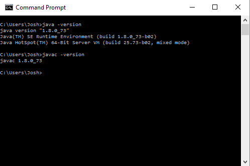

Windows
- First determine if your machine is 32-bit or 64-bit
- If you go to Local Disk (C:) (or maybe (D:)) in the File Explorer there will be a folder named "Program Files" and maybe one named "Program Files (x86)". If your Operating System is 64-bit then "Program Files" is for 64-bit programs and "Program Files (x86)" is for 32-bit programs. If your Operating System is 32-bit then you will just have "Program Files" and it will be for 32-bit programs.
- If your operating system is 64-bit then you will download the Windows x64 download from Oracle. If 32-bit then you will download the Windows x86 download from Oracle. Download the appropriate installer here.
NOTE: Make sure that you download the Java Development Kit (JDK) not the Java Runtime Environment (JRE). The JRE only allows you to run java programs, in order to develop your own java programs you will need the JDK.
- Run the installer that you just downloaded. If your system is 64-bit then java will install in your "Program Files" folder. (You may also have a "java" folder in "Program Files (x86)" and you should ignore it because the java kit you are currently downloading will NOT install there.) If your system is 32-bit then java will install in your "Program Files" folder.
- Add the path to the bin folder in the java folder that you just installed to your PATH environment variable. Make sure that it is the path to the bin folder and not the path to a file inside the bin folder. eg: C:\Program Files\Java\jdk1.8.0_60\bin
- Verify that you have successfully installed java.
Mac OS X
- Make sure that you have installed Homebrew before proceeding! Look at the top of the resources page on this website for instructions on installing Homebrew.
- Run the folloing command in the Terminal:
brew update
brew tap caskroom/cask
brew install Caskroom/cask/java
- Verify that you have successfully installed java.
Linux
- Download and run the appropriate Java Development Kit installer from http://www.oracle.com/technetwork/java/javase/downloads/index-jsp-138363.html#javasejdk
OR
For Ubuntu and other debian based distribution, install openjdk using your default package manager (apt-get is a very common default package manager). This is the reccomended method.
OR
For Fedora-based and other distros that use the Redhat Package Manager format, download the correct "Linux RPM" architecture from Java Downloads
- Add the JDK's bin directory to your PATH environment variable, if necessary.
- Verify that you have successfully installed java.
All Operating Systems
To confirm that your java installation was successful:
- At the command prompt type java -version. You should get output on the next line like java version "1.8.0_60.
- At the command prompt type javac -version. You should get output like javac 1.8.0_60.
- The output should look something like this:

- Of course if you are on Mac OS X or Linux then this will be in your Terminal not Command Prompt.
- The version number should be "1.8*" Where the * can be any number. An older version of java will not work for the purposes of this class!
Oracle's installation instructions
Oracle, the company that makes Java, has their installation instructions here